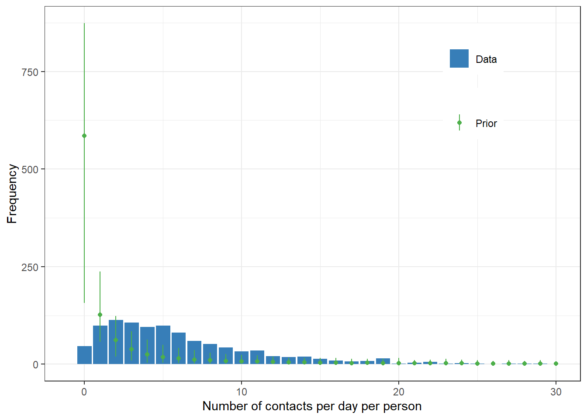
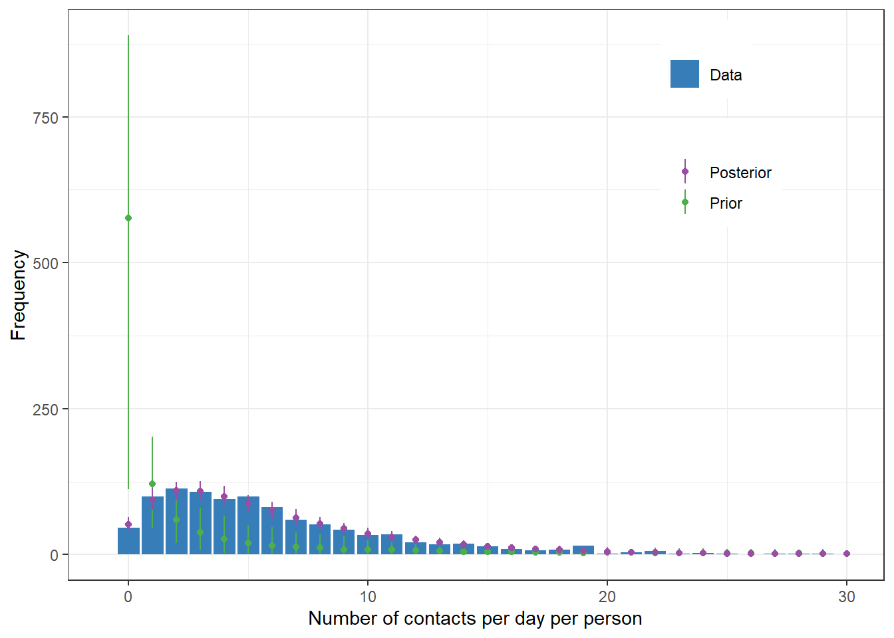
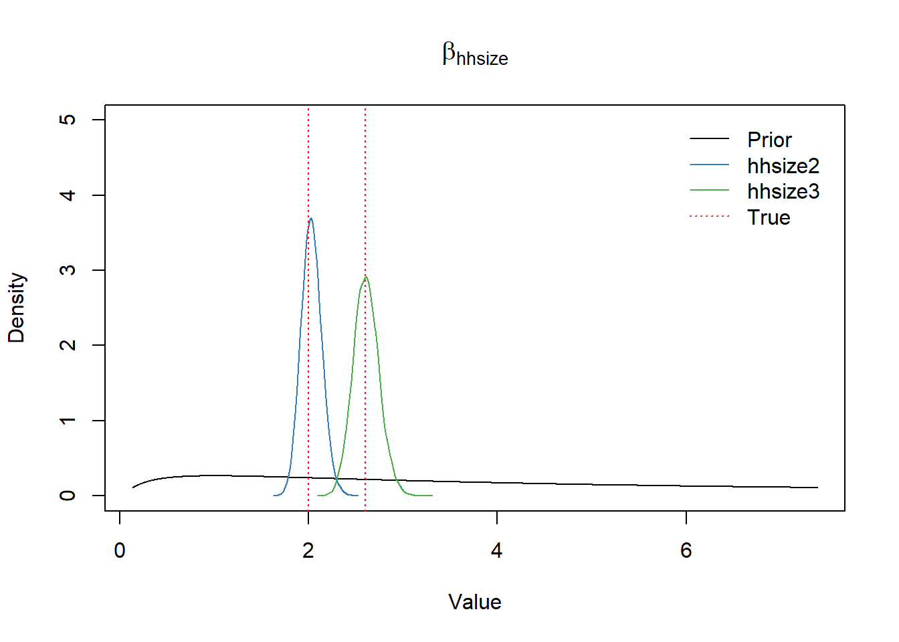

# parameter values to be estimated
intercept_true <- 3 # base number of contacts
rr_age_true <- c(1.5,0.6) # relative number of contacts by age (age0 = 1)
rr_hhsize_true <- c(2,2.6) # relative number of contacts by household size (hhsize0 =1)
size_true <- 5 # shape parameter for the negative binomial distribution
set.seed(42)
# 9 categories with >100 observations on average
d <- data.frame(age = sample(1:3, 1000, replace=T),
hhsize = sample(1:3, 1000, replace=T))
d$b_age <-
ifelse(d$age == 1, 1,
ifelse(d$age == 2, rr_age_true[1], rr_age_true[2])) # relative risk by age
d$b_hhsize <-
ifelse(d$hhsize == 1, 1,
ifelse(d$hhsize == 2, rr_hhsize_true[1], rr_hhsize_true[2])) # relative risk by household size
# mean as a function of age and hhsize
a <- intercept_true
log_mu <- log(a) + log(d$b_age) + log(d$b_hhsize)
d$mu <- exp(log_mu)
d$age <- as.factor(d$age)
d$hhsize <- as.factor(d$hhsize)
d$contacts <- rnbinom(nrow(d), mu=d$mu, size=size_true) # size, aka, shape, dispersionBayesian workflow: fake social contact data example
Bayesian workflow
negative binomial
social contact
Bayesian workflow
This post is an example analysis following a Bayesian workflow and uses simple models and fake data. I consulted a pre-print, Bayesian Workflow by Gelman et al. and blog post by Betancourt.
Gelman et al. writes:
“… Bayesian inference is just the formulation and computation of conditional probability or probability densities, \(p(\theta|y) \propto p(\theta) p(y|\theta)\). Bayesian workflow includes the three steps of model building, inference, and model checking/improvement, along with the comparison of different models, not just for the purpose of model choice or model averaging but more importantly to better understand these models …”
Let’s suppose, hoping to develop a way to better disease control strategies, we set out to measure the number of close contacts that a typical person makes in a day and variation of the close contacts across age and household size.
Conceptual analysis
The study is to examine the variations of the number of contacts a typical Korean makes in a day, specifically, variations by age and household size. A prior study and other numerous studies showed that contact frequencies differ by age. And a significant fraction of contacts occur with household members and as such the contact frequencies will likely vary by household size.
There are three conceptual modelling approaches: descriptive, predictive and explanatory acording to the study by Shmueli, This study is best described as a descriptive study and the descriptive study does not directly aim at obtaining optimal predictive performance, but at capturing the data structure parsimoniously. For a descriptive model, interpretability, transportability and general usability are important criteria as described in the article.
The integer number of people that each person met during one day. Participants are classified by age and household size. The number of contacts are best captured with negative binomial distribution and mean umber of contacts is a function of age and household size.
\[ y_i \sim \text{NB}(y_i|\mu_i,\phi)=\frac{\Gamma (y_i + \theta)}{\Gamma (\theta) y_i !}) \left(\frac{\mu_i}{\mu_i+\phi} \right)^y \left(\frac{\phi}{\mu_i+\phi} \right)^\phi \tag{1}\]
\[\text{log}(\mu_i)= \alpha + \beta_{\text{age}_i} +\beta_{\text{hhsize}_i} \tag{2}\]
We take the fake-data simulation approach, which can help us understand our data model and priors, what can be learned from an experiment, and the validity of the applied inference methods.
Generate the fake data
Parameters of interest are the ratios of contacts per day (i.e., rate ratios or relative risks) by age and household size. Plugging Equation 2 into Equation 1 becomes our generative model.
Histogram, mean, and variance of the data
library(tidyverse)
d |>
ggplot(aes(x=contacts))+
geom_histogram(binwidth=1)+
theme_bw()mean(d$contacts)[1] 6.148var(d$contacts)[1] 25.07918Building the model
Bayesian modeling using the brms package.
library(brms)Prior predictive model using the sample_prior = "only" argument
# prior distribution
a_mean <- 0
a_scale <- 1.5 # chosen with an assumption that exp(2*a_scale) will likely cover plausible values
b_mean <- 0
b_scale <- 1.5
shp_alpha <- 0.8 # 0.4 (brms default) causes divergent transitions,
shp_beta <- 0.3my_priors <-
c(prior_string(paste0("normal(", a_mean, ",", a_scale,")"),
class = "Intercept"),
prior_string(paste0("normal(", b_mean, ",", b_scale,")"),
class = "b"),
prior_string(paste0("inv_gamma(", shp_alpha, ",", shp_beta,")"),
class="shape"))
prior_pred <- brm(contacts ~ 1 + age + hhsize,
data = d,
family = negbinomial(),
prior = my_priors,
iter = 1e4, sample_prior = "only", cores = 4)
saveRDS(prior_pred, "prior_pred.rds")Prior predictive checks
prior_pred <- readRDS("prior_pred.rds")
priorpc <- pp_check(prior_pred, type="bars", ndraws = 200)
priorpc$data |>
ggplot(aes(x=x))+
geom_col(aes(y=y_obs, fill="Data"))+
geom_point(aes(y=m, color="Prior"))+
geom_linerange(aes(ymax=h, ymin=l, color="Prior"))+
scale_x_continuous(limits=c(-1,30))+
labs(x="number of contacts", y= "frequency")+
scale_color_manual("", values=c("Prior"="forestgreen"))+
scale_fill_manual("", values=c("Data"="steelblue"))+
theme_bw()+
theme(legend.position=c(0.8,0.8))
Fit the model
Gelman et al. writes: ” … The first step in validating computation is to check that the model actually finishes the fitting process in an acceptable time frame and the convergence diagnostics are reasonable. In the context of HMC, this is primarily the absence of divergent transitions, Rb diagnostic near 1, and sufficient effective sample sizes for the central tendency, the tail quantiles, and the energy (Vehtari et al., 2020). …”
fit <- brm(contacts ~ 1 + age + hhsize,
data = d,
family = negbinomial(),
prior = my_priors,
iter = 1e4, cores = 4)
saveRDS(fit, "fit.rds")brms package reports all the relevant information.
fit <- readRDS("fit.rds")
summary(fit) Family: negbinomial
Links: mu = log; shape = identity
Formula: contacts ~ 1 + age + hhsize
Data: d (Number of observations: 1000)
Draws: 4 chains, each with iter = 10000; warmup = 5000; thin = 1;
total post-warmup draws = 20000
Regression Coefficients:
Estimate Est.Error l-95% CI u-95% CI Rhat Bulk_ESS Tail_ESS
Intercept 1.10 0.05 1.01 1.20 1.00 18087 13497
age2 0.36 0.05 0.27 0.45 1.00 22199 15458
age3 -0.53 0.05 -0.63 -0.42 1.00 22085 15938
hhsize2 0.74 0.05 0.63 0.84 1.00 20153 15715
hhsize3 1.03 0.05 0.93 1.13 1.00 19397 15626
Further Distributional Parameters:
Estimate Est.Error l-95% CI u-95% CI Rhat Bulk_ESS Tail_ESS
shape 5.19 0.46 4.37 6.16 1.00 26405 14803
Draws were sampled using sampling(NUTS). For each parameter, Bulk_ESS
and Tail_ESS are effective sample size measures, and Rhat is the potential
scale reduction factor on split chains (at convergence, Rhat = 1).Plot posterior predictive values along with prior predictive values
prior_pred <- readRDS("prior_pred.rds")
priorpc <- pp_check(prior_pred, type="bars", ndraws = 200)
postpc <- pp_check(fit, type="bars", ndraws = 200)
postpc$data |>
ggplot(aes(x=x))+
geom_col(aes(y=y_obs, fill="Data"))+
geom_point(data=priorpc$data, aes(y=m, color="Prior"))+
geom_linerange(data=priorpc$data,aes(ymax=h, ymin=l, color="Prior"))+
geom_point(aes(y=m, color="Posterior"))+
geom_linerange(aes(ymax=h, ymin=l, color="Posterior"))+
scale_x_continuous(limits=c(-1,30))+
labs(x="number of contacts", y= "frequency")+
scale_color_manual("", values=c("Prior"="forestgreen",
"Posterior"="firebrick"))+
scale_fill_manual("", values=c("Data"="steelblue"))+
theme_bw()+
theme(legend.position=c(0.8,0.8))
Prior and posterior distributions of parameters
Trace plots and histograms
plot(fit, pars = "^b_")
# plot(fit, pars = ".*age*.")
# plot(fit, pars = ".*hhsize*.")Correlations
pairs(fit, pars = ".*age*.")
\(\beta_{\text{age}}\) parameter
df_post <- as.data.frame(fit)
x <- seq(-2, 2, 0.01)
df <- data.frame(x=seq(-2, 2, 0.01))
df$prior_density <- dnorm(df$x, b_mean, b_scale)
plot(exp(x), dnorm(x, b_mean, b_scale), type="l", ylim=c(0, 20),
xlab="value", ylab="density", main=expression(beta[age]))
lines(density(exp(df_post$b_age2)), col=2)
lines(density(exp(df_post$b_age3)), col=3)
abline(v=rr_age_true, col="purple", lwd=2)
legend("topright",
bty = "n",
lty=1,
col=c(1,2,3,"purple"),
legend=c("Prior", "age2", "age3","True"),
inset=0.02)
# ggplot2 way
# ggplot()+
# geom_line(data=df, aes(x=exp(x), y=prior_density, color="Prior"))+
# geom_density(data=df_post, aes(x=exp(b_age2), color="Posterior b_age2"))+
# geom_density(data=df_post, aes(x=exp(b_age3), color="Posterior b_age3"))+
# scale_color_manual(values=c("Prior"="forestgreen",
# "Posterior b_age2"="firebrick",
# "Posterior b_age3"="steelblue"))+
# labs(color="", x="value", y="density")+
# theme(legend.position="bottom")\(\beta_{\text{hhsize}}\) parameter
plot(exp(x), dnorm(x, b_mean, b_scale), type="l", ylim=c(0,5),
xlab="value", ylab="density", main=expression(beta[hhsize]))
lines(density(exp(df_post$b_hhsize2)), col=2)
lines(density(exp(df_post$b_hhsize3)), col=3)
abline(v=rr_hhsize_true, col="purple", lwd=2)
legend("topright",
bty = "n",
lty=1,
col=c(1,2,3,"purple"),
legend=c("Prior", "hhsize2", "hhsize3", "True"),
inset=0.02)
Intercept
x <- seq(-3, 3,0.01)
plot(exp(x), dnorm(x, a_mean, a_scale), type="l", ylim=c(0,4),
xlab="value", ylab="density", main="Intercept")
lines(density(exp(df_post$b_Intercept)), col=2)
abline(v=intercept_true, col="purple", lwd=2)
legend("topright",
bty = "n",
lty=1,
col=c(1,2,"purple"),
legend=c("Prior", "Posterior", "True"),
inset=0.02)
Shape parameter
library(extraDistr)
x <- seq(0,10,0.01)
plot(x, dinvgamma(x, shp_alpha, shp_beta), type="l",
ylim=c(0,2), xlab="value", ylab="density", main="Shape")
lines(density(df_post$shape), col=2)
abline(v=size_true, col="purple", lwd=2)
legend("topright",
bty = "n",
lty=1,
col=c(1,2,"purple"),
legend=c("Prior", "Posterior", "True"),
inset=0.02)